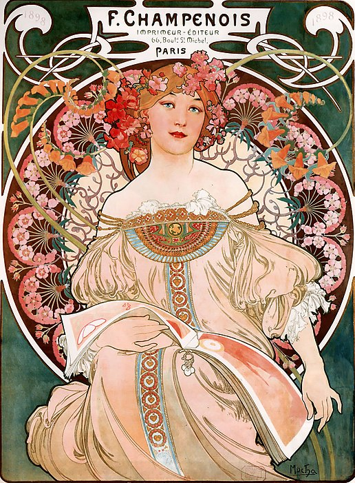

아르누보(프랑스어: Art Nouveau, /ˌɑːr(t) nuːˈvoʊ/ AR(T) noo-VOH, 프랑스어: [aʁ nuvo] ( 듣기))는 19세기 말에서 20세기 초에 성행했던 유럽의 예술 사조로서 프랑스어로 "새로운 미술"을 뜻한다. 독일어권에서는 잡지 '유겐트'의 이름을 따서 유겐트 양식(유겐트슈틸)이라고도 불린다. 아르누보 양식이 최고조를 이룬 시기는 19세기 말부터 20세기 초반(1890~1905)이다. 아르누보는 19세기 아카데미 예술의 반작용으로 자연물, 특히 꽃이나 식물 덩굴에서 영감을 받은 장식적인 곡선을 많이 사용하는 특징이 있다.
